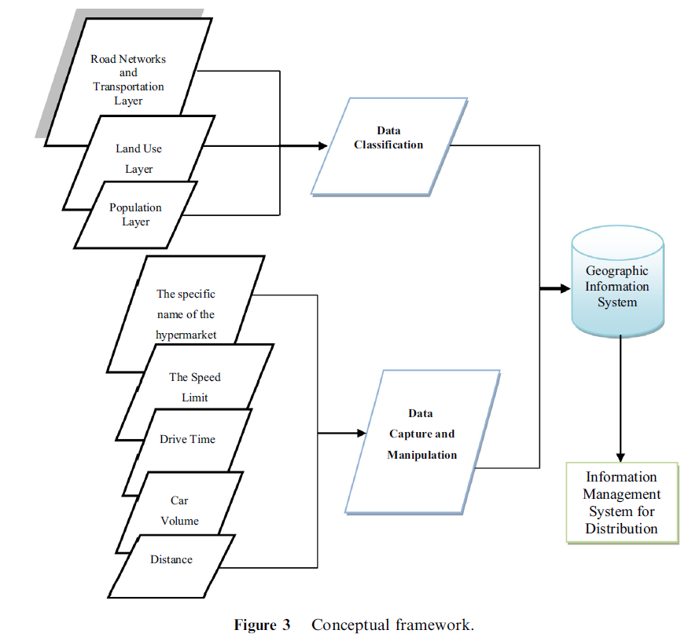
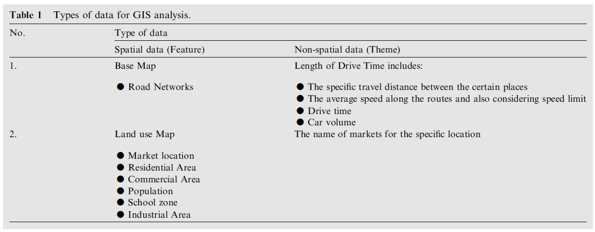
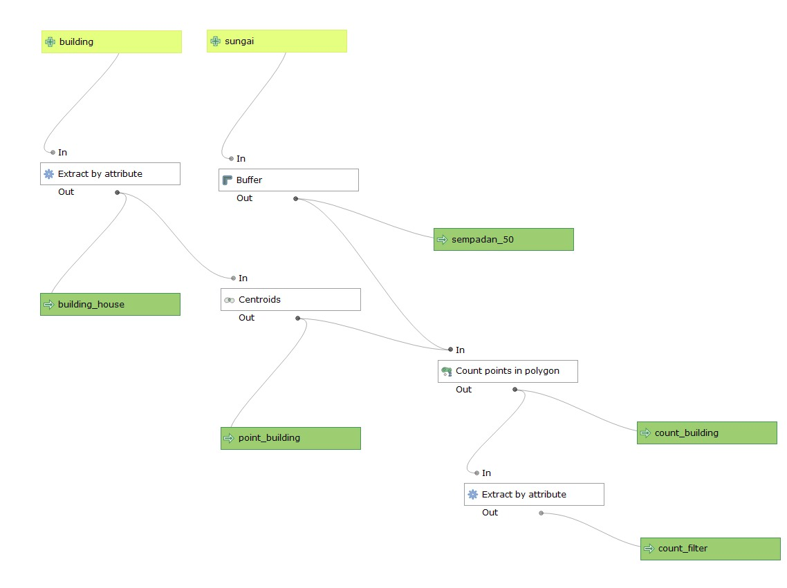
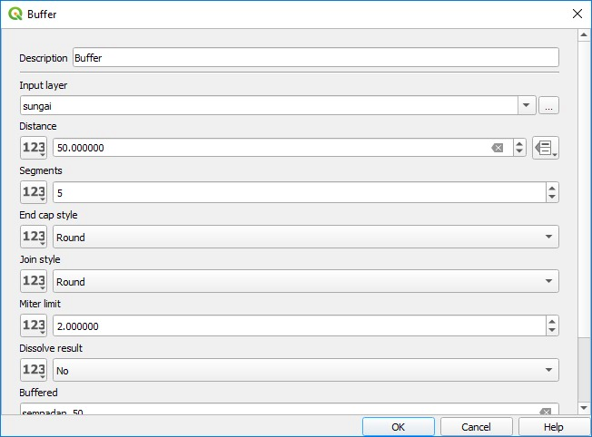
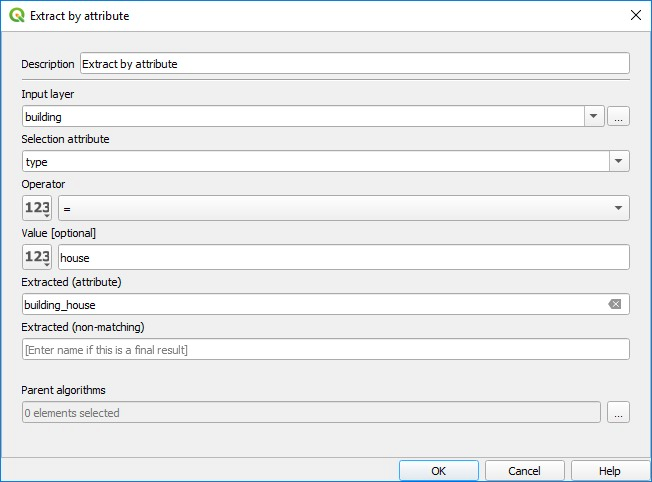

5 Hari Kelima
Referensi
“Geographic Information System (GIS) modeling approach to determine the fastest delivery routes”: https://www.sciencedirect.com/science/article/pii/S1319562X15001370
5.1 Conceptual framework

5.2 Data

5.3 Final regression model
LTIME = +0.2663 * CARVOLUME + 0.6984 * LLENGTH + 0.0203 * LPOP + 0.0605 * TWOWAY + 0.1681 * SCHOOL + 0.0317 * RESIDENTIAL - 0.5497
5.4 Praktek Pemodelan SIG
5.4.1 Menghitung jumlah rumah di sempadan sungai


